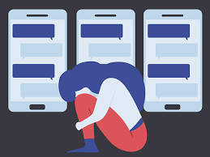
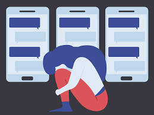

Online harassment is abusive behavior that happens online through various platforms. It is repeat unsolicited and abusive contact, with the goal of intimidating or frightening the target. Online harassment can include name-calling, stalking, physical threats, and humiliation. It can also have an offline component, where the harassment starts or escalates offline. Online harassment can make the target feel unsafe, humiliated, scared or emotionally distressed.
Most common forms of online harassment are Trolling , threats about physical harm and sexual harassment, cyber stalking, doxing, character assassinations, cyberbullying.
TYPES OF ONLINE HARASSMENT:
Some of the most common forms of online harassment are:
Trolling:
The act of using inflammatory or off-topic messages to spread discord and resentment in an online community. The individuals or organizations performing such acts are known as “Trolls”. Trolling is the digital equivalent of mob lynching.
Threats About Physical Harm and Sexual Harassment:
A common reaction to people posting their opinion on social media is the threat of causing physical or sexual harm. Besides, many people forward indecent comments and lewd remarks to women over the internet.
Many women whom I know, have received frequent and sometimes aggressive messages from total strangers over the internet. Stand-up comics and content creators talking about religion or politics often attract death threats and threats of sexual exploitation.
Cyber Stalking:
Many people aggressively follow the internet activity of other people. Perpetrators use the internet, email, and other forms of electronic communication, to follow, hound and harass individuals.
Doxing:
Criminals undertaking doxing, collect and share private information such as residential addresses, and social security numbers into the virtual world. These cybercriminals often resort to doxing to gag activists and protestors. It is the online counterpart of the offence of blackmail.
Character Assassinations:
This refers to an intentional attempt to tarnish a person’s reputation through severe, and often unfair criticism.
Cyberbullying:
Almost all forms of harassment fall under the general category of cyberbullying. In fact, these bullies use digital technologies to upset the lives of their victims. Moreover, their activities are aimed at “scaring, angering, or shaming” the victims.
SYMPTOMS:
Emotional Distress:
Increased stress, anxiety, or depression.
Feeling overwhelmed, helpless, or powerless.
Loss of self-esteem or self-worth.
Fear and Anxiety:
Fear of online spaces or specific individuals.
Anxiety about receiving messages or notifications.
Constantly checking online accounts for abusive content.
Social Isolation:
Withdrawing from social media or online communities to avoid harassment.
Isolating from friends or online connections due to fear.
Physical Symptoms:
Headaches, stomachaches, or other stress-related physical symptoms.
Sleep disturbances, such as insomnia or nightmares.
Decreased Productivity:
Difficulty focusing on work or daily tasks due to online harassment.
Reduced academic or job performance.
PREVENTION:
Online harassment is a serious issue that can have a significant impact on an individual’s mental and emotional well-being. Here are some steps you can take to prevent online harassment:
Educate yourself: Learn about the different types of online harassment, such as cyberbullying, cyberstalking, doxing. This will help you recognize when you are being targeted and take appropriate action.
Protect your personal information: Be cautious about sharing personal information online, such as your home address, phone number, or email address. Use privacy settings on social media platforms to control who can see your posts and profile.
Report harassment: If you are being harassed online, report it to the relevant authorities or social media platforms. You can also seek help from organizations that specialize in dealing with online harassment.
Block the harasser: Most social media platforms allow you to block users who are harassing you. This will prevent them from contacting you or seeing your posts.
Take a break: If you are feeling overwhelmed by online harassment, take a break from social media or the internet altogether. This can help you regain your sense of control and reduce stress.
Remember that online harassment is never your fault, and there is no shame in seeking help if you need it.